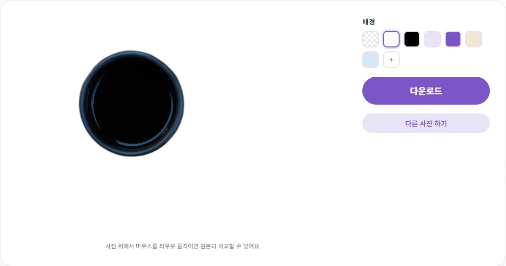
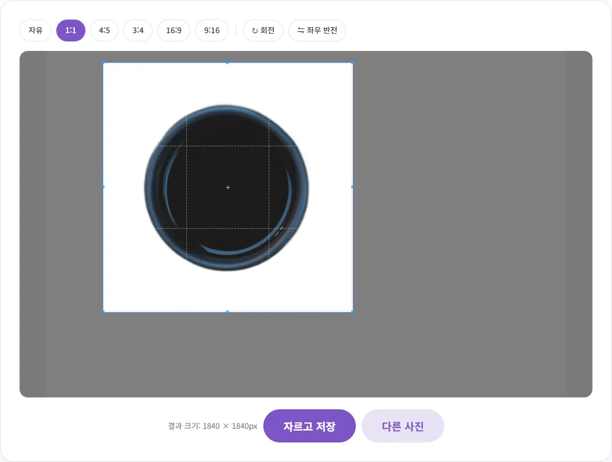
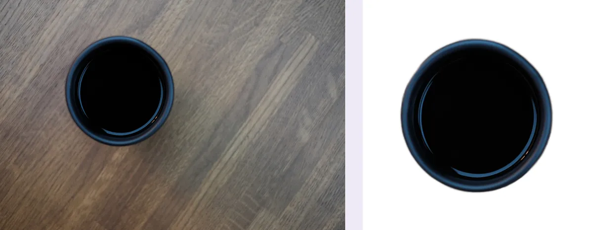

상품 사진, 집에서 흰 배경으로 깔끔하게 만들려면?
식탁이나 책상 위에서 찍은 상품 사진을 올리려니 배경이 어수선해 보여 고민되시죠? 이 글에서는 찍을 때 챙길 것부터, 배경을 지워 흰색으로 저장하고 정사각형 대표이미지로 자르는 과정까지 실제로 해 본 숫자와 함께 알려 드릴게요.
왜 다들 흰 배경으로 올릴까요?
상품 목록에서는 손님이 사진 여러 장을 한눈에 훑어봐요. 배경이 단순하면 상품 모양과 색이 바로 들어오고, 가게 전체 사진도 정돈돼 보여요. 네이버 쇼핑파트너센터의 '상품검색 SEO 가이드'도 이미지 중 하나 이상은 상품 전체 모양을 알 수 있게 정면에서 찍고 흰색이나 단색 배경을 쓰라고 권하고 있어요.
같은 가이드에는 '저품질 이미지' 예시도 나와 있는데, 배경이 어지러워 상품을 구분하기 힘든 사진, 매장에 진열된 그대로 찍거나 소품을 많이 두고 연출한 사진, 이미지 안에 글자·워터마크·도형이 지나치게 많은 사진이 들어 있어요. 분위기 있는 연출 사진은 상세페이지나 추가 이미지에 쓰고, 대표이미지는 상품만 또렷하게 보이는 사진으로 두는 게 무난해요.
찍을 때부터 절반은 끝나요: 촬영 요령
배경 지우기는 AI가 해 주지만, 원본이 좋을수록 경계가 깔끔하게 나와요. 특별한 장비 없이 챙길 수 있는 것만 정리했어요.
빛은 밝고 부드럽게
해가 드는 낮에 창가에서 찍되, 직사광선이 상품에 바로 닿으면 그림자가 진하게 생겨요. 얇은 커튼으로 한 번 거르거나, 창 반대쪽에 흰 종이나 하드보드지를 세워 그림자 쪽에 빛을 되비추면 훨씬 부드러워져요.
바닥과 뒤는 단색으로, 상품과 다른 색으로
흰 전지나 큰 도화지를 벽에서 바닥까지 둥글게 이어 깔면 경계선 없는 배경이 돼요. 이때 상품 색과 배경 색이 비슷하면 AI도 경계를 헷갈려요. 흰 컵이라면 흰 종이 대신 회색이나 하늘색 종이 위에서 찍은 뒤 배경을 흰색으로 바꾸는 편이 경계를 구분하기에 유리해요.
여백을 넉넉하게, 흔들림 없이
나중에 정사각형으로 자를 수 있도록 상품 둘레에 여백을 충분히 두고 찍으세요. 휴대폰을 컵이나 책에 기대 고정하고 타이머를 쓰면 흔들림이 줄어요. 초점이 흐린 사진은 배경을 지워도 흐린 그대로라서, 찍고 나서 확대해 초점부터 확인하는 게 좋아요.
1단계: 배경 지우고 흰색 JPG로 저장하기
- 배경 제거를 열고 상품 사진을 올리세요. 한 번에 한 장씩 처리해요.
- AI가 주인공을 찾아 배경을 지울 때까지 기다리세요. 결과가 나오면 사진 위에서 마우스를 좌우로 움직여 원본과 비교할 수 있어요.
- 오른쪽 '배경'에서 흰색 칸을 누르세요. 화면에서 바로 흰 배경으로 바뀌어요.
- '다운로드'를 누르면 이름 뒤에 _nobg가 붙은 JPG로 저장돼요.

직접 해 보니 3840×2560 크기 사진을 올리고 결과가 나오기까지 처음에는 약 30초가 걸렸어요. 처음 한 번은 AI 모델(약 40MB)을 내려받기 때문이고, 같은 화면에서 두 번째 사진은 약 12.5초 만에 끝났어요. 흰색 JPG는 크기가 원본과 똑같은 3840×2560이었고 용량은 약 198KB(202,643바이트)였어요. 배경이 단색이 되면서 원본 1.4MB보다 훨씬 가벼워졌어요. '투명'을 고르면 같은 크기의 PNG(약 1.4MB)로 받을 수 있는데, 이건 상세페이지 디자인에 상품을 오려 붙일 때 써요. 사진은 내 브라우저 안에서만 처리되고 서버로 올라가지 않아요.
2단계: 정사각형으로 자르기
상품 목록 칸은 정사각형으로 보이는 곳이 많아서, 대표이미지는 1:1로 맞춰 두면 상품이 엉뚱하게 잘려 보이는 일이 줄어요. 아래 규격 표처럼 네이버 스마트스토어도 1000×1000px 정사각형을 권장 크기로 안내하고 있어요.
- 이미지 자르기에 방금 저장한 흰 배경 JPG를 올리세요.
- 위쪽 비율 버튼에서 '1:1'을 누르세요.
- 모서리 점을 끌어 상자 크기를 줄이고, 상자 가운데를 끌어 상품이 한가운데 오도록 옮기세요.
- 아래 '결과 크기'를 확인하고 '자르고 저장'을 누르세요.

한 가지 주의할 점이 있어요. '1:1'을 누르면 자르기 상자가 사진 한가운데에 잡혀요. 테스트 사진처럼 상품이 한쪽으로 치우쳐 있으면 처음 상자에서는 컵 왼쪽이 잘려 나갔어요. 그래서 상자를 꼭 상품 쪽으로 옮긴 뒤 저장하세요. 상품이 칸의 대략 70~80%를 차지하도록 여백을 남기면 목록에서 답답해 보이지 않아요(정해진 규칙은 아니고 보기 좋은 정도예요). 이렇게 자른 결과는 1840×1840px, 약 163KB(166,519바이트) JPG였어요.

마켓에 올리기 전에 규격 확인하기
네이버 스마트스토어 판매자센터 도움말 '상품 등록 시 이미지 권장 사이즈 및 확장자'에서 직접 확인한 내용이에요.
| 항목 | 스마트스토어 도움말 내용 |
|---|---|
| 대표·추가 이미지 권장 크기 | 1000 × 1000px |
| 파일 형식 | jpg, jpeg, gif, png, bmp (정지 이미지) |
| 최대 등록 용량 | 20MB |
| 쇼핑 검색 연동이 안 될 수 있는 경우 | 300 × 300px 이하, 4000 × 4000px 이상, 가로 1 : 세로 2 비율 초과 등 |
같은 도움말에는 등록할 때 JPEG 품질 90%가 적용돼 원본과 화질 차이가 날 수 있다는 안내도 있어요. 그러니 처음부터 너무 낮은 화질로 저장해 올리지 않는 게 좋아요. 위에서 만든 1840×1840px 파일도 권장 범위 안이지만, 크기를 딱 1000×1000px로 맞추고 싶다면 이미지 크기 조절에서 가로 1000px로 줄이면 돼요.
쿠팡, 11번가, G마켓 같은 다른 오픈마켓은 대표이미지 규격과 배경 규칙이 마켓마다, 그리고 카테고리마다 다를 수 있어요. 이 글에서는 공식 안내를 직접 확인하지 못해 숫자를 적지 않았어요. 올리기 전에 각 마켓 판매자 센터(셀러 도움말)의 이미지 등록 안내를 꼭 확인하세요.
결과가 어색할 때 이렇게 해 보세요
- 상품이 떠 있는 것처럼 보여요: 배경을 지우면 바닥 그림자도 함께 사라져요. 대부분의 목록 사진에서는 문제가 없지만, 어색하다면 처음부터 흰 종이 위에서 찍어 원래 그림자를 살리는 방법도 있어요.
- 가장자리가 살짝 부드럽게 번져요: 테스트에서도 컵 테두리가 원본보다 약간 부드럽게 처리됐어요. 저장 전에 확대해서 확인하고, 거슬리면 더 밝은 곳에서 초점을 맞춰 다시 찍는 게 가장 빨라요.
- 유리컵·투명 포장·흰 상품: 배경이 비쳐 보이거나 배경과 색이 비슷한 상품은 AI가 일부를 배경으로 착각할 수 있어요. 앞에서 말한 것처럼 상품과 대비되는 색 종이 위에서 찍어 보세요.
- 여러 상품이 한 사진에: AI는 주인공으로 보이는 것만 남기려 해요. 네이버 가이드도 한 이미지에 한 상품을 권하니, 상품마다 따로 찍는 편이 좋아요.
- 도용이 걱정돼요: 대표이미지에 큰 글자를 넣으면 앞에서 본 저품질 사례에 걸릴 수 있어요. 워터마크를 어디에 어떻게 넣을지는 상품 사진 도용 막는 워터마크 넣는 법에 따로 정리해 두었어요.
이 도구는 배경 색과 비율을 맞춰 줄 뿐, 마켓 심사나 검색 노출을 보장하지는 않아요. 업로드 전에 각 마켓의 최신 안내를 한 번 더 확인하세요. 프로필이나 증명사진 배경을 바꾸는 법은 이력서 증명사진 만드는 법에 있어요.